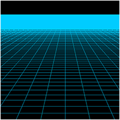
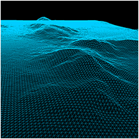
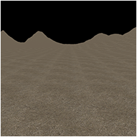
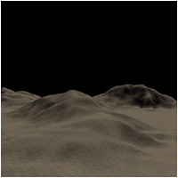
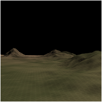
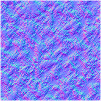
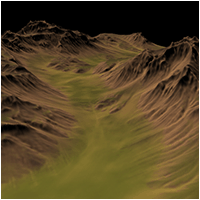

OpenGL 4.0 Terrain on Linux Tutorials
 |
Tutorial 1: Grid and Camera Movement |
 |
Tutorial 2: Bitmap Height Maps |
 |
Tutorial 3: Terrain Texturing |
 |
Tutorial 4: Terrain Lighting |
 |
Tutorial 5: Color Mapped Terrain |
 |
Tutorial 6: Terrain Normal Mapping |
 |
Tutorial 7: RAW Height Maps |